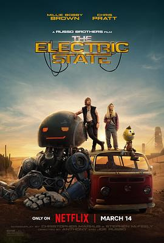

电幻国度 / The Electric State
又名：电力之州
机器人的设定非常棒（没看过原著），尤其是套娃的那个。就是故事有点太一般了。
作品信息
| 导演 | 乔·罗素 / 安东尼·罗素 |
| 编剧 | 克里斯托弗·马库斯 / 斯蒂芬·麦克菲利 |
| 主演 | 米莉·波比·布朗 / 克里斯·帕拉特 / 关继威 / 杰森·亚历山大 / 伍迪·诺曼 / 吉安卡罗·埃斯波西托 / 斯坦利·图齐 / 伍迪·哈里森 / 安东尼·麦凯 / 布莱恩·考克斯 / 珍妮·斯蕾特 / 汉克·阿扎利亚 / 科尔曼·多明戈 / 艾伦·图代克 / 德文·达尔顿 / 泰瑞·诺塔里 / 马丁·科勒巴 / 帕蒂·哈里森 / 亚当·克罗斯代尔 / 加布里埃尔·梅登 / 克里斯·西尔维斯特里 / 布鲁克·布卢姆 / 库利·卡尔文 / 阿兰·波尔 / 迈尔斯·伊万斯 / 安吉拉·戴维斯 / 兰德尔·P·海文斯 / 乔·罗素 |
| 类型 | 剧情 / 喜剧 / 动作 / 科幻 / 冒险 |
| 制片国家/地区 | 美国 |
| 语言 | 英语 |
| 上映日期 | 2025-03-14(美国网络) |
| 片长 | 128分钟 |
| IMDb | tt7766378 |
说过什么
2025-04-21 17:17:58
广播 · 看过 · ★★★☆☆
机器人的设定非常棒（没看过原著），尤其是套娃的那个。就是故事有点太一般了。
2023-12-30 17:34:51
广播 · 想看
最后一次看到是 2026-08-01T11:04:06+10:00 · 豆瓣原页